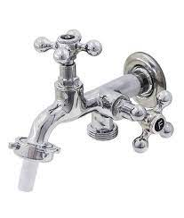
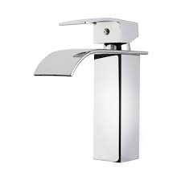

A Torneiras é uma loja de torneiras especializada na venda das mais diversas torneiras, desde uma torneira simples até as mais básicas.
Temos o intuito de proporcionar a melhor relação com os clientes e de disponibilizar os melhores produtos pelos menores preços
Esta loja surgiu a partir de um sonho da nossa dona, Elma Maria, que, desde pequena, sempre foi apaixonada por torneiras.
Temos a missão de oferecer as melhores tecnologias de torneiras e as melhores inovações em nossos produtos pelo menor preço
Nossos valores são: Transparência; Criatividade; Equilíbrio; Sustentabilidade; Inovação.